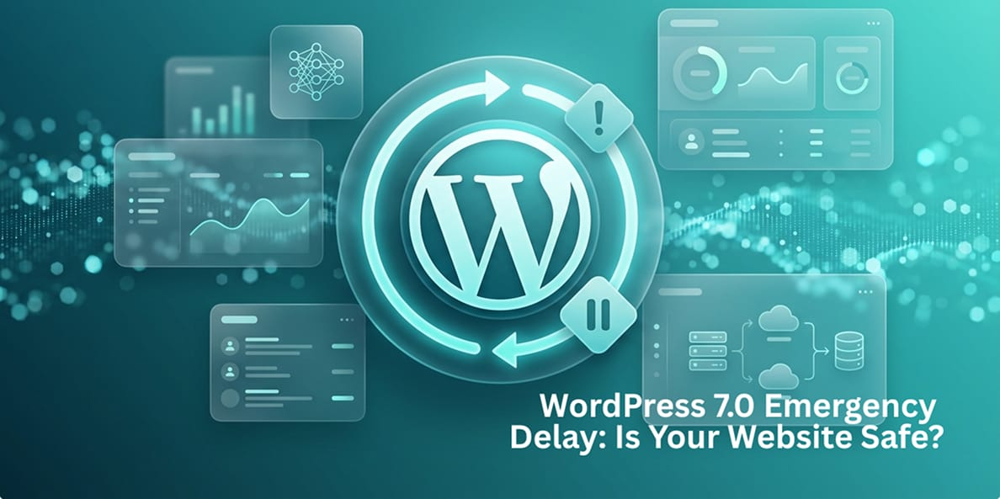

WordPress 7.0 Emergency Delay:Is Your Website Safe From the NewUpdate?
WordPress community has experienced an unprecedented shock. For the first time in ages, an update has been halted before the deadline.
Technically speaking, WordPress 7.0 was set to be launched on April 9, 2026. The core development team decided to apply emergency brakes, however. And if you have a website, then it is vital that you learn why. This is not a minor setback; it is a preventive measure to avoid a catastrophe in the web sphere.

The Reason Behind the “Emergency Brakes”
The most notable feature introduced in WordPress 7.0 is real-time collaboration (RTC). It is intended to allow multiple people to collaborate ina single post simultaneously - similar to Google Docs, Finally, no more waiting for someone to close an “locked" post tab.
Nevertheless, during the fnal testings, the team found out that enabling such a powerful function may pose a great threat. In order to introduce RTC, WordPress willinevitably require changes to how data is synced and stored in your database.
- The Conflict: Continuous editing involves many small bursts of data entry per minute.
- The Problem: Thus, in case if there are any imperfections in the system, all those small data bursts can overload the shared hosting server, or cause "bloating " of the database, which makes your website run much slower.
- The Solution: According to Matt Mullenweg, “stability" should always come before a deadine, and that is why the project wil remain in “Release Candidate stage" for a few more weeks.
Other Than Collaboration: WhatisThere In WordPress7.0?
While all focus is being laid on the delayed release, WordPress 7.0 comes with many other mgjor updates you have to be ready for. Along with collaboration, the following will be available soon:
1. The Native Al Infrastructure
With WordPress 7.0, the WP AI Client becomes available. So far, all Al plugins had to establish their connections to platforms such as OpenAl or Gemini. With WordPress 7.0, however, there is a new'bridge' that connects to Al models right from the core. It means that the platform becomes 'Al-Ready' by default, with plugins having one way of accessing Al models only.
2. The New Admin Interface (DataViews)
It took nearly two decades before WordPress got its long-needed update. While its previous versions were still using an outdated dashboard, version 7.0 introduces DataViews - a more modernized and eficient alternative to the previous post list.
3.New Core Blocks
In order to minimize the need for additional plugins, WordPress wil introduce:
- Breaderumbs: This means no more SEO plugins required only to add breadcrumbs links.
- The lcons Block: Add SVG icons easily and without compromising the loading speed of your website due to large icon libraries.
- Responsive Grid Block: Create a responsive grid layout without any hassle.
What's Different? The Technical Comparison
In order to give you an overview of what's changed, please find below a list comparing the original design with the new emergency design
| Feature | Original Plan | Emergency Plan (Latest) |
|---|---|---|
| Lqunch Date | April 9th, 2026 | Postponed (Targeting late May) |
| Main Objctive | Introduce new features | Provide maximum stability and security |
| PHP Compatibility | Discontinuing support for 7.2 and7.3 | Pure PHP 7.4+ compatibility |
| Testing Frequency | Normal 3-week Beta Test | Extensive “Release Candidate”" Testing |
| Risk Level | High (Database crashes possible) | Low (Ready and Risk-Free) |
Important Warning: “Dead End" of PHP Versioning
First and foremost, don't overlook the change in the system requirements. The official WordPress 7.0 update will no longer support PHP version 7.2 and 7.3.
Hence, if your web host server runs PHP version 7.2 and 7.3, your website would be at risk. You won't get any updates and patches, and your website's speed wil suffer. Consequently, your frst step should be checking the server settings.
Preparation of Your Website During the Launch Delay
Given that we have extra days for the launch of WordPress 7.0, we must make good use of our time. Below are some guidelines you must follow:
- Audit Your Plugins: Some outdated plugins that contain “classic meta boxes" willclash with Real-Time Collaboration.
- Clear Your Database: Since WordPress 7.0 will perform many database writes, your website will lag if your database has too many revisions. You can use any database optimizer plugin.
- Create a Staging Environment: Before updating your live website, test it in a safe environment.
Conclusion
In conclusion, WordPress 7.0 is a mgjor update that hasn't happened in years. t demonstrates how the core team prioritizes your website's security by postponing the upgrade untilit is absolutely necessary. Although a “stable"release can assure you, the magnitude of the change will be significant for any entrepreneur.
Therefore, many companies are beginning to consider WordPress Maintenance services to avoid making DIY upgrades and focusing on other tasks. Why should you be concerned with database synchronization and PHP problems when managing your business?
With Wpcaps WordPress Maintenance services, you gain 24x7 wordpress support services that take care of this update for you. Our team handles all staging testing, database optimization, and server updates so that you can relax and use the new functionalities of the software.